纪念死去的页游：坦克大战online
首次编辑：2024/8/23/14:27
最后编辑：2024/8/23/
前天在家里打扫，再一次翻出了尘封的玩具。里面有一些自己做的手工，都是坦克模样。
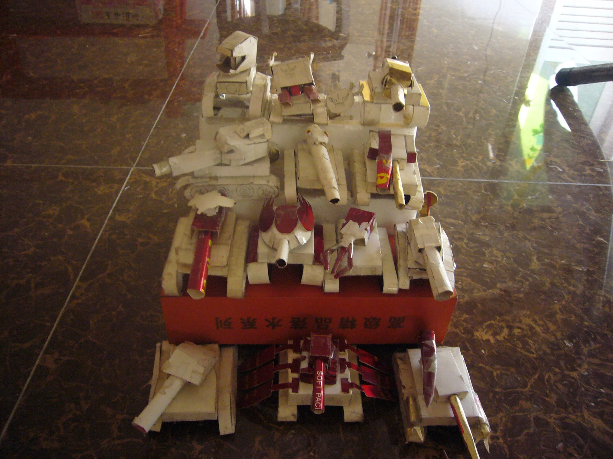
还在上小学的时候，某天我哥突然带着我玩这款不知从哪里找到的网页游戏。到现在已经过去十几年了。
也不知从哪一天起，我就再也没上线过这款游戏。
上中学后的某一天，我突然心血来潮，想再上线去看看。打开电脑，在搜索框搜索“坦克大战online”，却没有找到游戏的官网，取而代之的是网友在一个帖子里的那句“倒闭了”。
如今十多年过去了，连那个说“倒闭了”的帖子也无法寻见，网络上除了那些老旧的游戏资讯网站里能出现09年到12年关于这个游戏的新闻，这款游戏就像从来没有来过这世上一样，没有留下什么痕迹。
好在我想起了那个所有网站的最终归宿——互联网档案馆（访问需魔法）。在互联网档案馆搜索坦克大战online曾经的域名“tank365.com”，当那陌生又熟悉的界面出现在眼前，那种感觉真的又兴奋又感动，又有一丝丝惋惜。
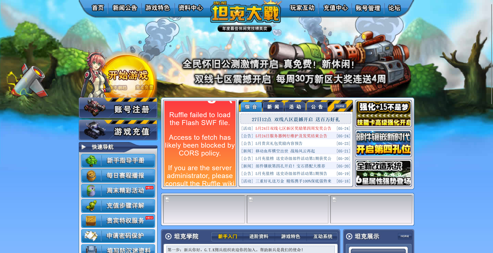
我的“英雄”们
这个游戏改编自经典的红白机游戏坦克大战，就像现在的大多数游戏都有“英雄”一样，坦克大战online也有自己的“英雄”。
如果没记错的话，威震天是我们第一个手工制作的“英雄”，它好像是我哥最喜欢的角色。

实际上做出来的样子和游戏里的差别很大，当时我们不仅工艺不精，而且缺少材料和工具，最好大概也只能做成这个样子。不过最上面那顶“帽子”倒感觉还真做出了那么点神韵。
霸王龙是我最喜欢的角色，所以我们第二个就做了它。

第三个做的是谁，已经无从记起了，或许是蜘蛛侠：

又或许是猛鬼：

旁边那个猛鬼小人，好像是因为当时我哥在画猛鬼的脸时没画好，顺便就把它的躯干都给画上了，结果觉得挺逗的，就给剪下来了。
但猛鬼这个名字，其实在昨天我还一直想不起来，直到在那些游戏咨询网站的新闻帖子里翻来覆去看到了这两个字，我才终于有那么点印象。
虽然它的大名我一直想不起来，但它在当boss时用的名字——禁锢长老，我却一直深记心中。
游戏里的闯关关卡里的boss都是由这些“英雄”来“饰演”的，而这个时候它们也会用上别的名字，比如霸王龙在当boss时的名字是大地旅人。
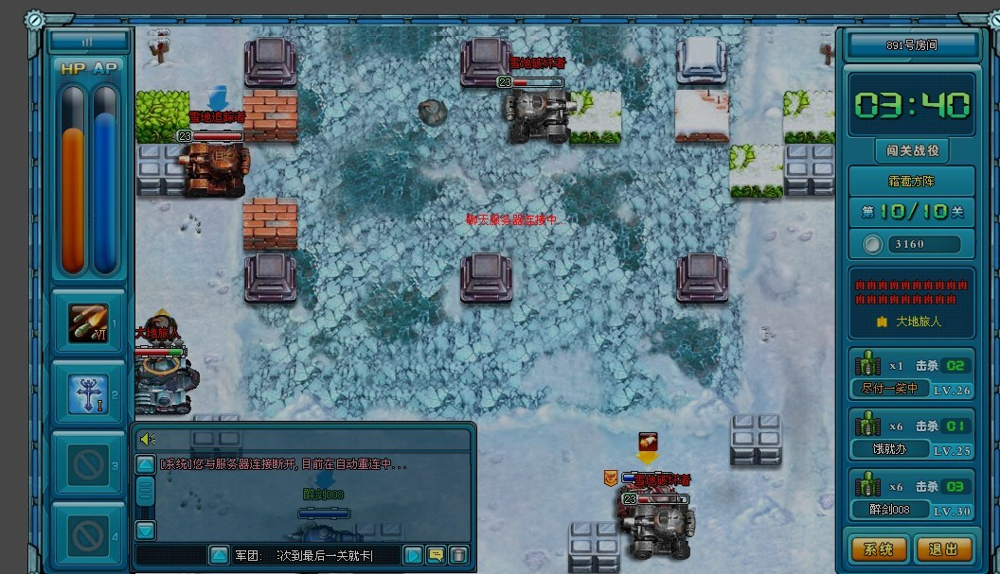
大地旅人身上一直会有一圈一圈的光环从头顶往下降，我已经忘记那是什么了，应该是什么被动技能。
这些boss出场时都会说一句台词。
比如角色“鬼舞者”的出场台词是“挺有能耐啊，看来我得亲自出手了！”
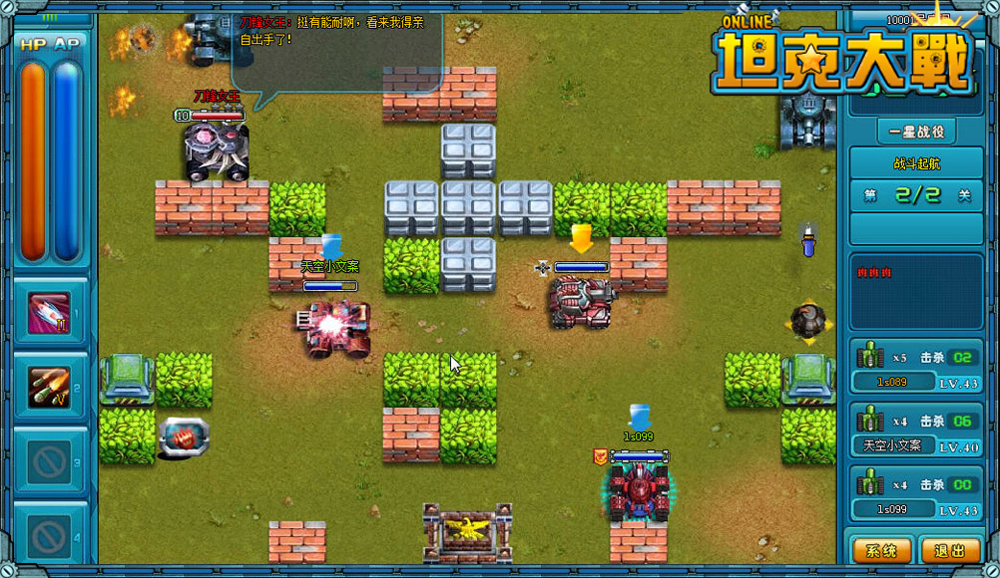
乔巴的出场台词是“你每打我一下，我都记着，最终都会还给你！”
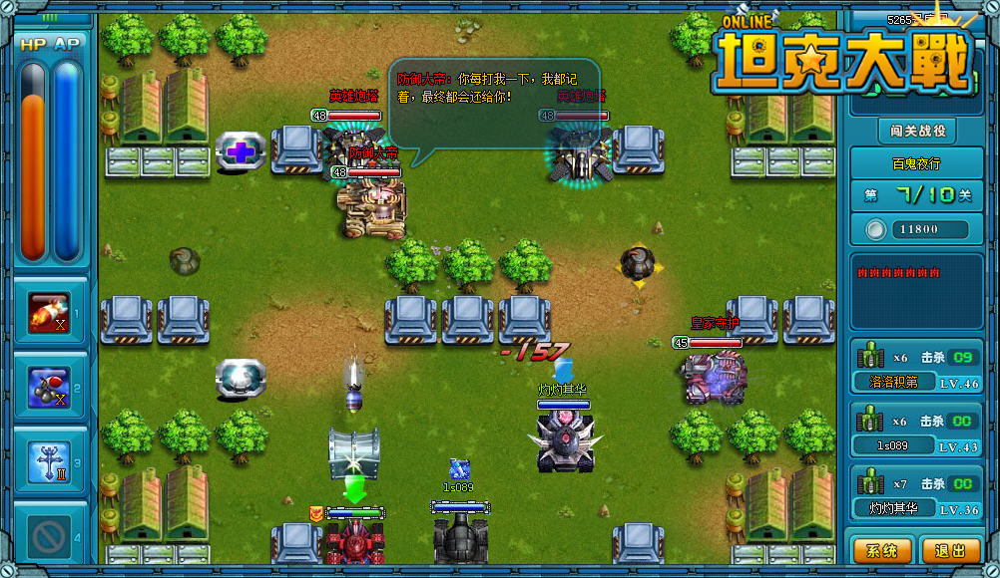
乔巴的boss名叫“防御大帝”，现在听到这个名字仍能觉得恶心——这家伙太肉了，打起来巨辛苦。
蜘蛛侠的boss名应该是“炎狱领主”，我记不太清了，只知道它当boss的图都是火系的，它手下的小兵叫做“炎狱喽啰”，这个倒是百分百确认，因为“喽啰”这个词和某个方言词发音近似，我们觉得很滑稽。
而猛鬼的boss名就是“禁锢长老”——或许是因为它能控。而它的出场台词是最逗的：“来来来，娃娃们，本长老让你们几招”——这也是我为什么记不住它本名却能记住“禁锢长老”的原因。
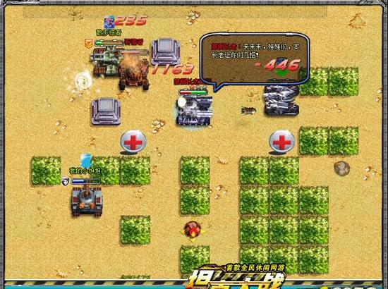
想不起名字的不止它一个，另外还有两个角色我也想了很久没想起来。
一个是玄武。

我在网上先找到的却是它的boss名——冰霜战将，然后一股恶心感就来了，它也是肉系的坦克，而且还会放冰弹减你的速。
它的形象有个特点，就是后面有条🐍，当时做手工的时候还一直在想怎么做这条🐍，然后我哥就这么草率地画了一条“🐍”，然后就这么草率地给它接尾巴上了。
一个是火影。

火影实在是没什么突出的特点，以至于我看到游戏里的火影时，也不敢确定是不是它。
不同于其它角色，哈雷却始终是个当小弟的命，从来没有当过boss。

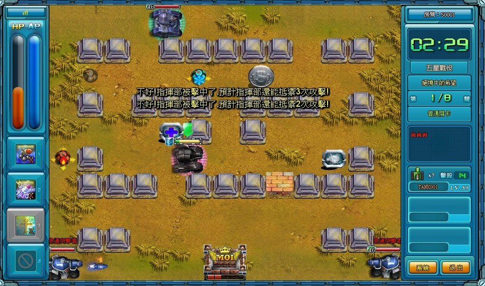
但它也是我在游戏里最不想遇到的敌军之一，因为它不仅速度快，而且会一股脑往基地跑，咔咔几炮就把基地轰了。
还有一些角色在当时应该算比较新的，既没有成为boss，也没有当小弟。
比如在当时看来很帅气的瞬。

做出来的效果感觉也蛮惊艳的。
还有诺亚方舟、阿凡达、蝎子王、金刚狼。


最后登场的是我们的新手英雄——绿橄榄。

你可能会说，这绿橄榄怎么不绿啊？这当然是因为我们对这个陪伴我们最久的新手英雄的私心。实际上就是因为我们没有绿色的废纸壳。不过在它的炮台上我们也留下了解释：
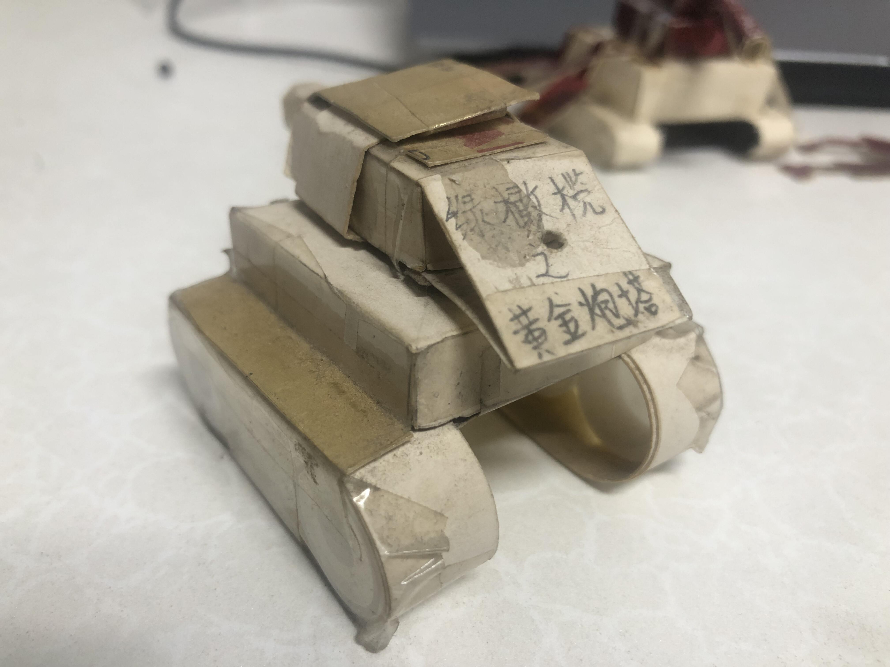
所以说这是绿橄榄的升级版🤣。
绿橄榄也是小弟来着，昨天在网上看到它的时候，心里就不自觉冒出一个名字——“传说哥”。当时还觉得应该是自己搞串了，但直到后来看到游戏截图我才确信没记错。
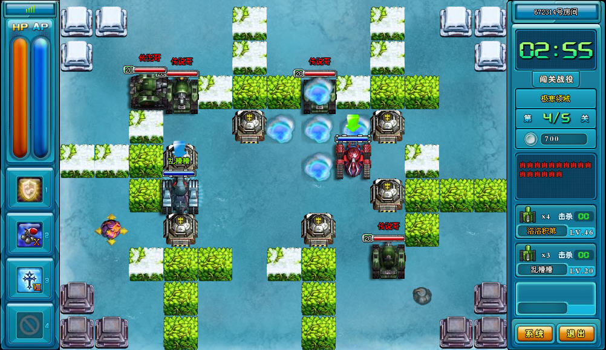
话说怎么每个游戏里都有一个传说哥。
感慨一下
时隔这么多年，再次看到游戏界面时，几乎都要热泪盈眶了。
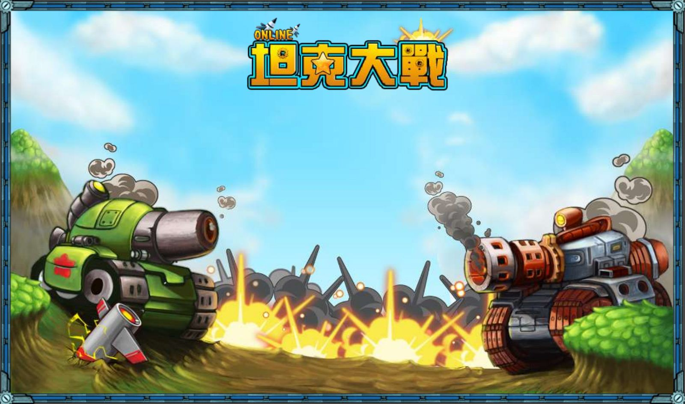
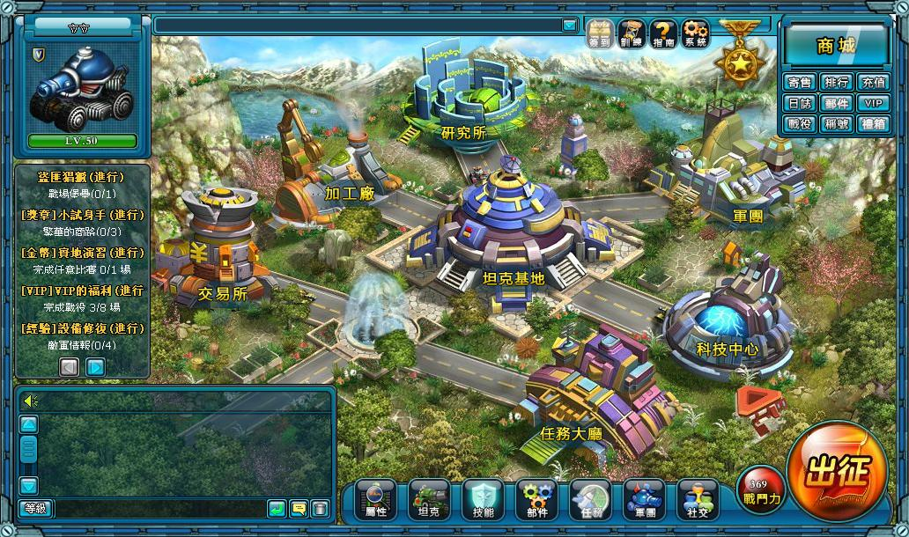
第一次跟着瓦鲁团长一起打敌人。
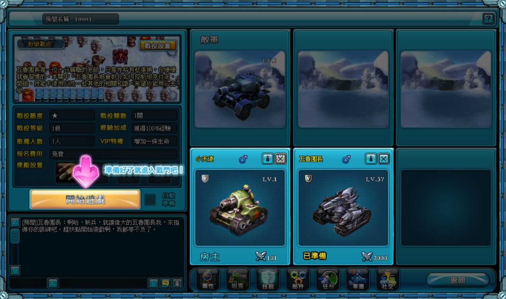
合成部件的艰辛（我到头来好像也只合成了一个黄色的，剩下的都是比较低级的蓝色绿色和白色）。
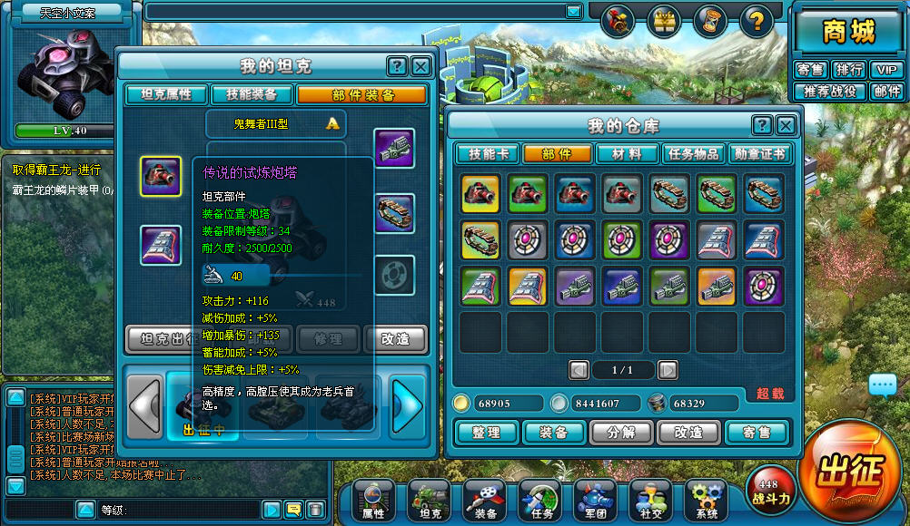
打坑爹关卡时的无奈。
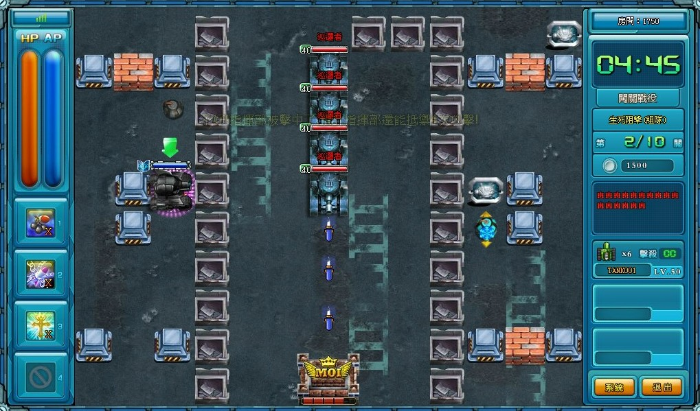
昨天在回忆猛鬼的名字的时候，突然想起来我在很久之前给坦克们拍过“写真”，把它们都放在了QQ空间里。一看时间，已经是遥远的2013年。
时至今日，游戏早已悄悄地停了服，那些放在箱子里的手工坦克，被我翻开的次数也越来越少，身上全都落满了灰。
诺亚方舟的桨已经七零八落。
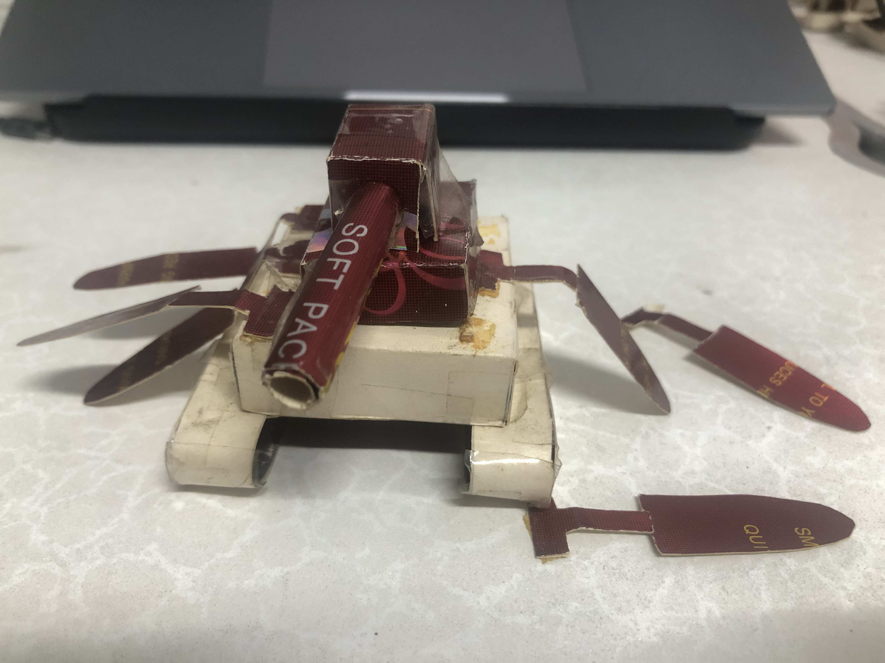
霸王龙更是几乎肢解了。
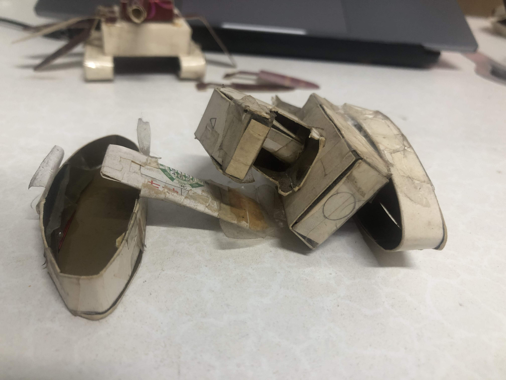
不知啥时起也不知为啥，我再没点开这个游戏，从那之后，就再也没有机会点开了。
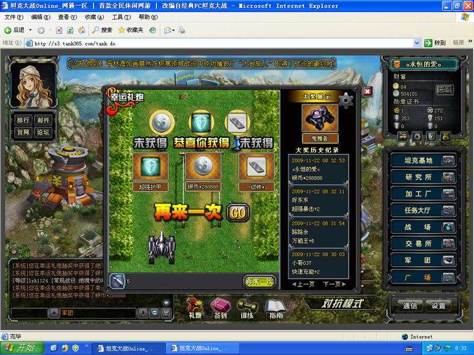
那些能找到坦克大战online的网站
阅读量 0
作者：码鸽
链接：https://code-pigeon.github.io/blog/html/【8月23日】纪念死去的页游：坦克大战online.html
版权声明：博客所有原创内容（包括但不限于文章、图像等）除特别声明外，均采用CC BY-NC-SA 4.0国际许可协议。任何人均可自由传播，但禁止用于商业用途且必须署名并以相同方式分享。